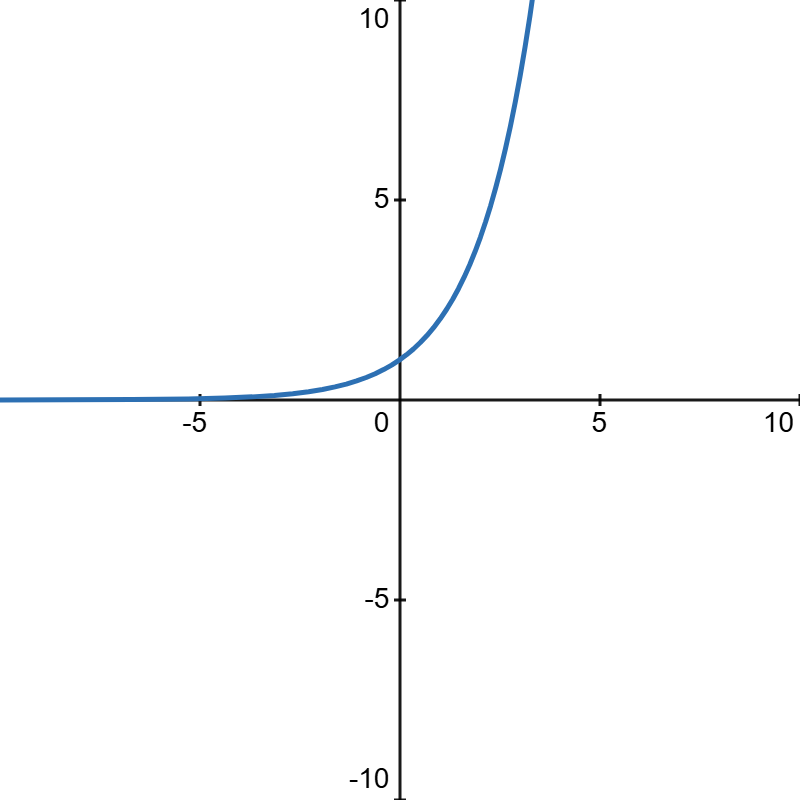
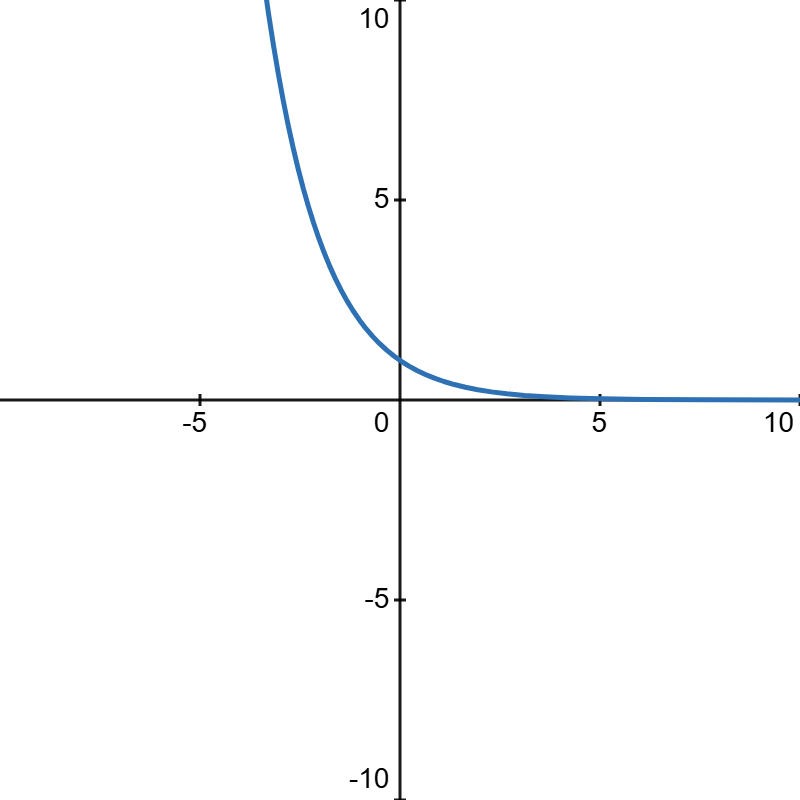

扇形弧长公式：\(l = \theta r\)
扇形面积公式：\(S = \frac12l r = \frac12\theta r^2\)
| \(a^x(a \gt 1)\) |  |
| \(a^x(a \lt 1)\) |  |
| 正整数集 | \(\mathbb{N}_+\)或\(\mathbb{N}^*\) |
描述函数的变化速率
积分：描述函数的累计结果
平面角：以角的顶点为圆心作单位圆，平面角截单位圆的长度即为其弧度值。
这也是为什么平面角取值为\([0, 2\pi]\)
立体角：以角的顶点为球心作单位球，立体角截单位球的面积即为其大小。
因此立体角取值为\([0, 4\pi]\)
笛卡尔坐标系表示两个同纬度的矩阵对应元素相乘，\(A\odot B\) or \(A\circ B\)